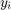

Lab 12 Solution
Lab Instructor: Valeria Barra
Contents
Friday Lab 04-24-2015, DUE Tuesday 04-28-2015 ; Monday Lab 04-27-2015, DUE Thursday 04-30-2015
Problem 1: Implicit Euler Method
Implement your own Implicit (backward) Euler's method to solve the IVP y'=2*y, y(0)=1. Reproduce the three tables for , showing the grid points , approximated solution , the actual solution  and the error , all at the same grid points for all three tables. To compute the error at each grid point use the value for the actual solution given .
Solution:
clear all; close all; % function handle of the RHS function for the problem f=@(t,y)(-2.*y); % the actual solution y=@(t)( exp(-2.*t)); % the vector of all h's h=2.^(0:-1:-4); % the IC given w0=1; Markers = ['o' '^' 's' '>' '<']; % just different symbols to plot Colors = ['r' 'g' 'b' 'c' 'm']; % different colors used for the different markers % the main cycle of the call of the function and display starts here % print the header of the table fprintf('\nProblem 1\n') fprintf('______________________________________________\n\n') fprintf('h w_i Error Ratio \n') fprintf('______________________________________________\n') for j=1:length(h) t{j}=(0:h(j):2); % domain % the implicit method here: w{j} =ImplicitEulerForLab12(t{j}, w0,h(j)); Error(j)=abs(y(t{j}(end)) - w{j}(end)); % print the table if j==1 fprintf('%5.4f %7.4f %8.4e \n',h(j), w{j}(end) , Error(j)) else Ratio(j-1)=Error(j-1)/Error(j); fprintf('%5.4f %7.4f %8.4e %7.4f \n',h(j),w{j}(end) ,Error(j), Ratio(j-1)) end % plots of all the approximations here line_fewer_markers(t{j},w{j},2*j,Markers(j),'MarkerFaceColor',Colors(j),'MarkerSize',5); hold on % plotting here if j==length(h) plot(t{j},y(t{j}),'--r') % plots the real solution only the last time hold on end end fprintf('______________________________________________\n') % attributes of the figure here title('Problem 1') xlabel('t') ylabel('w') box on legend({'$w_{h=1}$','$w_{h=1/2}$','$w_{h=1/4}$','$w_{h=1/8}$','$w_{h=1/16}$','y'},'interpreter','latex','location','northwest');
Problem 1 ______________________________________________ h w_i Error Ratio ______________________________________________ 1.0000 0.1111 9.2795e-02 0.5000 0.0625 4.4184e-02 2.1002 0.2500 0.0390 2.0703e-02 2.1342 0.1250 0.0281 9.8319e-03 2.1057 0.0625 0.0231 4.7582e-03 2.0663 ______________________________________________
Comments on Results: Implicit (backward) Euler's scheme is still of first order. And you can see that the ratio between two consecutive errors is roughly 2, as h was halved. The advantage of using an Implicit scheme rather than an Explicit one stands in the fact that the approximated solution is less sensitive to variations of the step size h. The explicit method needs to satisfy stability condition on the step size (this should be sufficiently small) to have reliable results. While the Implicit method is unconditionally stable (the reliability of the method does not depend on the step size chosen).
Problem 2: Explicit Euler for System of ODEs
Use Explicit (forward) Euler to solve the following system of ODEs
Solution:
% function handles of RHS functions f1=@(t,u1,u2)(9*u1 + 24*u2 + 5*cos(t) - (1/3)*sin(t)); f2=@(t,u1,u2)(-24*u1 - 51*u2 - 9*cos(t) + (1/3)*sin(t)); % ICs u0_1=4/3; u0_2=2/3; % the vector of all h's h=2.^(0:-1:-9); % actual solutions U1=@(t)(2*exp(-3.*t) -exp(-39.*t) + (1/3)*cos(t)); U2=@(t)(- exp(-3*t) + 2*exp(-39.*t) - (1/3)*cos(t)); % print the header of the table fprintf('\nProblem 2: Explicit Euler\n') fprintf('____________________________Values for t=1________________________________\n\n') fprintf('__________________________________________________________________________\n') fprintf('h w1 w2 Error_1 Error_2 \n') fprintf('__________________________________________________________________________\n') for j=1:length(h) t{j}=(0:h(j):1); % domain % the call of the method [w1{j},w2{j}]=ExplicitEulerSystem(f1,f2, t{j},u0_1,u0_2,h(j)); % corresponding errors ExpError1(j)=abs(U1(t{j}(end)) - w1{j}(end)); ExpError2(j)=abs(U2(t{j}(end)) - w2{j}(end)); % print the table fprintf('%6.4f % 9.4e % 9.4e % 9.4e % 9.4e \n',h(j), w1{j}(end) ,w2{j}(end),ExpError1(j),ExpError2(j)); end fprintf('___________________________________________________________________________\n')
Problem 2: Explicit Euler ____________________________Values for t=1________________________________ __________________________________________________________________________ h w1 w2 Error_1 Error_2 __________________________________________________________________________ 1.0000 3.4333e+01 -7.4333e+01 3.4054e+01 7.4103e+01 0.5000 -3.4180e+02 6.8455e+02 3.4208e+02 6.8478e+02 0.2500 -5.8637e+03 1.1728e+04 5.8640e+03 1.1728e+04 0.1250 -5.0845e+04 1.0169e+05 5.0845e+04 1.0169e+05 0.0625 -3.3223e+02 6.6474e+02 3.3250e+02 6.6497e+02 0.0313 2.6663e-01 -2.2340e-01 1.3044e-02 6.4853e-03 0.0156 2.7312e-01 -2.2663e-01 6.5568e-03 3.2598e-03 0.0078 2.7639e-01 -2.2825e-01 3.2863e-03 1.6338e-03 0.0039 2.7803e-01 -2.2907e-01 1.6450e-03 8.1782e-04 0.0020 2.7885e-01 -2.2948e-01 8.2296e-04 4.0914e-04 ___________________________________________________________________________
Comments on Results: As we have already seen by using Euler's Explicit Method for one single ODE, the order of convergence is linear in h. In fact, as h is halved, the error is also roughly halved.
Extra Credit: R-K4 for the System of ODEs
Solve the same system above with Runge-Kutta 4 method for systems of ODEs.
Solution:
% print the header of the table fprintf('\nProblem 2: R-K4\n') fprintf('____________________________Values for t=1________________________________\n\n') fprintf('__________________________________________________________________________\n') fprintf('h w1 w2 Error_1 Error_2 \n') fprintf('__________________________________________________________________________\n') for j=1:length(h) t{j}=(0:h(j):1); % domain % the call of the method [w1{j},w2{j}]=RK4System(f1,f2, t{j},u0_1,u0_2,h(j)); % corresponding errors ExpError1(j)=abs(U1(t{j}(end)) - w1{j}(end)); ExpError2(j)=abs(U2(t{j}(end)) - w2{j}(end)); % print the table fprintf('%6.4f % 9.4e % 9.4e % 9.4e % 9.4e \n',h(j), w1{j}(end) ,w2{j}(end),ExpError1(j),ExpError2(j)); end fprintf('___________________________________________________________________________\n')
Problem 2: R-K4 ____________________________Values for t=1________________________________ __________________________________________________________________________ h w1 w2 Error_1 Error_2 __________________________________________________________________________ 1.0000 -8.7294e+04 1.7459e+05 8.7294e+04 1.7459e+05 0.5000 -2.4616e+07 4.9232e+07 2.4616e+07 4.9232e+07 0.2500 -4.6304e+09 9.2608e+09 4.6304e+09 9.2608e+09 0.1250 -5.0119e+08 1.0024e+09 5.0119e+08 1.0024e+09 0.0625 2.7936e-01 -2.2925e-01 3.1697e-04 6.3901e-04 0.0313 2.7967e-01 -2.2988e-01 1.4951e-06 3.2828e-06 0.0156 2.7967e-01 -2.2989e-01 6.6783e-08 1.5113e-07 0.0078 2.7967e-01 -2.2989e-01 3.5180e-09 8.1125e-09 0.0039 2.7967e-01 -2.2989e-01 2.0107e-10 4.6874e-10 0.0020 2.7967e-01 -2.2989e-01 1.2002e-11 2.8148e-11 ___________________________________________________________________________